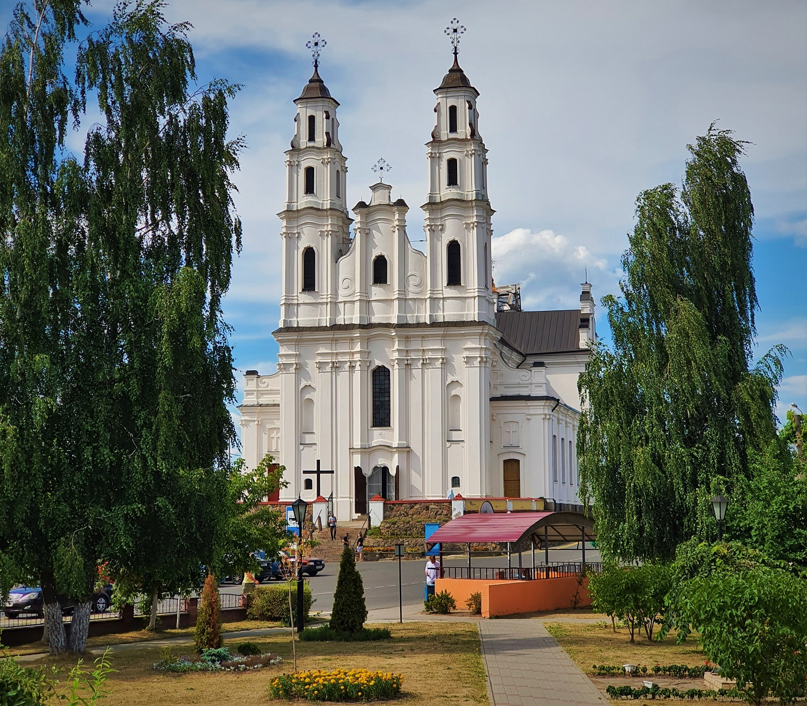
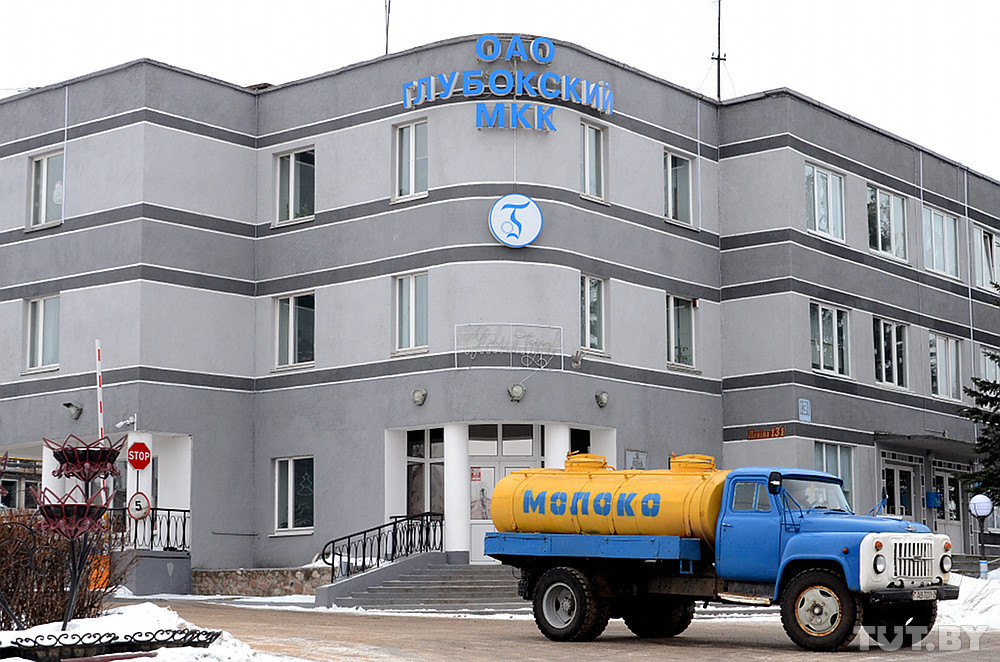

Смак Поозерья
Сегодня мы с вами отправимся в Глубокский район, где увидим, как рождается на свет легендарная сгущёнка и позавтракаем с видом на памятник архитектуры барокко. Затем мы узнаем, как крестьяне Плисы сохранили убранство своей церкви и отведаем местной ухи с колдунами. А вечером нас ждет арт-хутор "Мастеровые", где хозяева готовят сыр, запросто дающий фору итальянскому!
Дорога в Глубокое
В Глубокое из Минска лучше всего добираться автомобилем или автобусом, это займет от 2:30 до 3:00 часов и обойдется вам ~25-30 BYN. Чтобы успеть к завтраку, мы стартуем в 7 часов утра, благо, на улице весна и светает рано. Наш путь пролегает по живописным местам Логойщины, через Бегомль и Докшицы. Уже за Логойском мы покидаем Центральную Беларусь и перемещаемся в Поозерье - удивительный край, оставленный нам в наследство Большим ледником. Тысячи озер, больших и маленьких, не только радуют глаз, но еще и являются важнейшим элементом экосистемы, дающим дом и пищу многим видам животных.
Завтрак
Насладившись весенними пейзажами, мы прибываем в Глубокое, первую цель нашего путешествия. Нас уже ждут: на улице Ленина, в "Пекаренке" [ссылка на инстаграм], заварен ароматный кофе и готова свежая выпечка. Сытный киш или воздушный круассан придадут вам сил, я же был не в силах выбрать и попробовал оба. Кофе/чай/горячий шоколад обойдутся вам в ~2.5-4 BYN, выпечка ~2-5 BYN. Погода отличная, мы берем кофе навынос, поворачиваем за угол и оказываемся на центральной площади с видом на церковь Святой Троицы, памятник архитектуры в стиле барокко, построенную в 1764—1782 годах. Чудесный вид! Величие и легкость, колокольный звон и аромат выпечки делают это утро незабываемым.
Там же мы видим аллею знаменитых земляков, среди которых есть и Язэп Дроздович, художник и фольклорист, много путешествовавший по Беларуси, который любовью к своей стране проникся именно на малой родине, в Глубокском районе. На Глубоччине родился Игнат Буйницкий, основатель белорусского театра, Вацллав Ластовский, премьер-министр БНР и автор учебников по истории. Здесь жили выдающийся авиаконструктор Павел Сухой, автор романа «Знахарь» Тадеуш Доленга-Мостович, возрожденец иврита Бен-Иегуда, поэт Алесь Дубрович. Эти и другие имена знаменитых людей края увековечены на Аллее, которая не так давно появилась в Глубоком.

На противоположной стороне площади раскинулся бывший монастырь кармелитов и собор Пресвятой Богородицы, первый памятник и наиболее полное выражение школы виленского барокко на территории Республики Беларусь, в котором отразились важные этапы развития художественных принципов белорусского барокко.
Чарли и сгущеночная фабрика
Прикоснувшись к истории, мы отправляемся на Глубокский МКК - главную современную визитную карточку города, основной донор хорошего настроения нашей страны! Вместе с ведущим инженером консервного цеха мы пройдем все стадии приготовления любимого лакомства, поговорим об извечной конкуренции с рогачевской сгущенкой, расширении ассортимента, узнаем тайну секретного ингредиента и получим возможность продегустировать тягучую сладость.

Кусочек деревни
После экскурсии по заводу настало время двигаться дальше. Следующий пункт - деревня Плиса. Из Глубокого туда 6 раз в день ходит автобус, стоимость ~2.5 рубля. Время в пути - около 20-ти минут. Проезжаем через предместья Глубокого, минуем дачи и озеро Окунево и въезжаем в Плису. В деревне постоянно проживает чуть более 350 человек, а сама деревня впервые упоминается в документах аж в 1506 году! На въезде небесного цвета куполами нас встречает местная гордость - православная церковь в ретроспективном стиле, построенная в 1887 году и освященная во имя Святой Параскевы Пятницы. Сегодня богослужений нету, но жена церковного старосты Мария Афанасьевна отмыкает двери и мы можем войти и осмотреться. Сельская церковь отличается от храмов Глубокого своей простотой и даже немного аскетичностью, но это придает ей особое очарование. Беленые стены, золоченый иконостас - в праздничные дни храм наполняется прихожанами и прихожанками в разноцветных платках, и строгое пространство теплеет и преображается.

Выйдя из церкви, мы садимся в телегу к Николаевичу. Николаевичу 81, и он в прекрасной физической форме.
— После восьмидесяти я считаю годы в обратном порядке, сейчас мне 18, - шутит мужчина и мы смеемся.
Николаевич живет на соседней улице, у него агроусадьба. Он рыбачит, собирает грибы и целебные травы. Хозяин с женой угощают нас обедом - ухой, колдунами и деревенским квасом. Добротный сруб, простая деревенская пища из печи, яблоневый сад - то, что нужно городскому человеку для перезагрузки.
Сам Николаевич - сын партизана, и за обедом нас ждет рассказ о буднях и героизме 1й партизанской бригады Витебской области. Историй хватает и трагических, и веселых - с юмором даже самые тяжелые испытания переносятся легче! После войны родители Ивана Николаевича всю жизнь проработали в колхозе и передали сыну любовь к родной земле и труду. Также хозяева делятся с нами историей деревенской церкви. Оказывается, церковь неоднократно перестраивалась, и сейчас мы видим финальный вариант, которому 140 лет. Изначально храм был униатским, после перешел в лоно православного патриархата. В советское время купола были демонтированы, в здании открыли клуб и танцплощадку. Часть икон сохранили местные жители, и, после возвращения святыни верующим, иконы заняли свое привычное место.
Сырный рай
Ну, что ж! Отдохнули, прикоснулись к деревенскому быту и отправляемся еще дальше - 15 километров до Германовщины, где расположился арт-хутор «Мастеровые» [ссылка на инстаграм]. На хуторе живет и создает семья Ткачевых - Сергей, Мария и их четверо детей. Чуть больше десяти лет назад художники переехали в деревню и начали свое дело. Они умеют многое, держат коров и овец, собирают мед, но основная деятельность, прославившая их - сыроделие. У Ткачевых в арсенале и сычужный, и твердый голландский, и даже «камамбер» - белый тягучий сыр с корочкой. Дети встречают нас и уходят заниматься своими делами, младшие - играть, старшие - помогать по хозяйству. Жизнь на хуторе нельзя назвать легкой, но она дисциплинирует, учит работать руками и головой, а также ценить свою семью и любить природу. Человек - ее венец, это большое счастье и большая ответственность, считают Ткачевы.
В беседке уже накрыт стол. Мы для дегустации выбрали коллекцию «Германоўскiя колы» - 8 выдержанных сыров + ягодный напиток брожения. Вместе с Марией и Сергеем мы изучаем вкусы сыров, их сочетания с ягодами и напитками, обсуждаем национальные традиции сыроделия, а также говорим о сезонности сыра и особенностях географии. Вечер теплый, да и грушевый ферментированный напиток не даёт заскучать! После дегустации и лекции мы прощаемся с хозяевами, нас ждет обратный путь в столицу.
Летом можно разместиться на ночлег с палатками, поучаствовать в мастер-классах по гончарному и кузнечному ремеслу, плетению из лозы, погулять в лесу и порыбачить. Можно приобрести травяной чай, ремесленные сувениры. Понравившийся сыр можно приобрести с собой либо заказать доставку того сорта, который еще нуждается в вызревании. Сыр можно приобрести от 80 BYN за кг, каждые последующие два месяца вызревания увеличивают стоимость на 10 BYN. Дегустация стоит 30 BYN с человека.